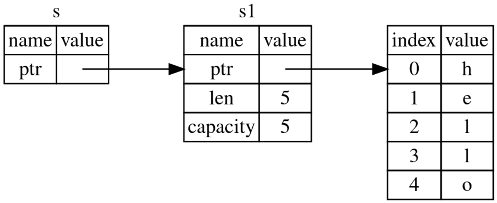

Rust-6-所有权与变量引用
引言
这篇文章在上一篇文章的基础上，介绍Rust中的三个重要概念：所有权、引用与借用。
文章目录
0×1.Rust所有权的概念
所有权三要素：
• Rust 中的每一个值都有一个被称为其所有者（owner）的变量；
• 值在任一时刻有且只有一个所有者；
• 当所有者变量离开作用域，这个值将被丢弃；
我们结合[Rust-5-变量数据的移动拷贝与克隆]中的内容，来分析一下所有权的三要素；
第一，"Rust 中的每一个值都有一个被称为其所有者（owner）的变量"，这个“值”指的就是，存储在栈上的数据（例如整形，bool类型等），或者堆中的数据（同时也有一个存放在栈上的指针），而这个变量，就是这些数据的“所有者”，请看下面的实例：
fn main() {
//s1变量的"值"，包括栈上的指针以及指针指向的堆数据
//s1就是个"值"的"所有者"
let s1:String=String::from("hello");
//i1变量的"值"，是直接存放在栈上的那些数据
//i1就是个"值"的"所有者"
let i1:i32=233;
}
第二：“值在任一时刻有且只有一个所有者”，这个"所有者"，对于栈数据，比如整数型，在没有被赋值给其他变量之前，所有者就是当前变量本身，当被赋值给其他变量之后，实际上值也被完整拷贝给了其他变量，所以对于这两个变量，值是不同的，仍然满足“值在任一时刻有且只有一个所有者”；而对于堆数据，满足上一篇文章中所说的，为了保证内存数据的安全，Rust确保对同一个堆数据，有且只有一个栈指针指向它，请看下面的实例：
fn main() {
let s1:String=String::from("hello");
let i1:i32=233;
//当s1被移动给s2，s1就失效了，s1原本"值"的所有权移动给了s2
//这个时候，我们可以说s2是这些值的所有者
let s2:String=s1;
//由于整形在Rust中实现了完整的栈拷贝
//i2所对应的"值"，其实是i1的"值"的拷贝
//所以i1仍然是自己栈上数据的所有者
//i1和i2分别对应了栈上不同位置的“值”
let i2:i32=i1;
println!("{}{}{}", i1,s2,i2);
}
第三：“当所有者变量离开作用域，这个值将被丢弃”，“作用域”这个概念，在Rust中有不同的范围，Rust编辑器会自动分析一个变量是否离开了作用域，简单的讲，当属于某个程序代码块中的变量被创建，但是还没有被使用，并且程序代码块未结束时，这个变量仍然处于作用域中，直到这个变量在这个代码块中最后被使用之后，Rust编辑器会自动将这个变量标记成离开作用域，并且释放内存，请看下面的实例：
fn main() { //main函数作用域的开始
//s1进入作用域，并获取f1函数的返回值
let s1 = f1();
//s2进入作用域
let s2 = String::from("hello");
//s3进入作用域，接收f2函数的返回值
//s2被传入f2函数中，到这里s2离开main函数作用域
//这相当于s2被移动给f2函数的a_string变量
//Rust编辑器会在这里将s2栈上数据释放掉
let s3 = f2(s2);
//在此之后调用s2就会报错
} //main函数作用域结束，s1离开作用域内存被释放，s2在之前已经被移动并且数据已经被释放，s3离开作用域内存被释放
fn f1() -> String { //f1函数作用域开始
//some_string 进入作用域
let some_string = String::from("yours");
//返回some_string给调用函数
//相当于将some_string移动给main主函数中的s1
//同时some_string栈数据被释放
some_string
} //f1函数作用域结束，因为some_string已经被移动，所以这里没有内存需要释放
fn f2(a_string: String) -> String { //f2作用域开始
//main主函数中的s2被移动给a_string
//在这里a_string又被移动给main主函数中的s3
//a_string栈上数据被释放
a_string
} //同理，f2作用域结束时，没有内存需要释放
通过上面的代码不难看出，所谓“所有者”其实就是指的内存中的数据属于哪个变量，而变量离开作用域内存被释放，要么是因为包含变量的函数作用域的结束，要么是因为变量被移动到了其他的函数作用域中。
0×2.变量的引用
变量的引用，在Rust中，就是创建一个指针，指向变量在栈上的数据，通过这个指针找到变量栈中数据，再通过栈中保存的指针找到存放在堆上的数据，如下图所示：
上图中，s是s1变量的引用，用&符号来创建一个引用，例如：s=&s1;
对变量的引用，又分为可变引用与不可变引用，下面是不可变引用的一个实例：
fn main() {
let s1=String::from("NikkoCat.com");
//将s1通过引用的方式传递给f1函数
//f1函数中的s变量只是s1变量的引用
//并没有将s1变量移动给s，所以s1在后面的代码中，仍然有效
let s1_len=f1(&s1);
println!("s1={},s1_len={}", s1, s1_len);
} //s1和s1_len离开作用域，内存数据被释放
//s变量只是获取了s1变量值的使用权
//但是s1变量值并没有移动到s，所以s并没有s1变量值的所有权
fn f1(s:&String) -> usize {
s.len()
} //当s离开f1函数的作用域，只是释放s本身储存在栈上的指针等数据
程序输出：
s1=NikkoCat.com,s1_len=12
当我们引用一个变量时，无法改变引用的变量指向的内存中的实际值（因为是借来的，不能随便修改），下面的实例会编译报错，我们尝试修改引用的变量：
fn main() {
let s1=String::from("NikkoCat");
let s2=&s1; //创建一个引用
//因为s2是s1的引用，所以不能修改被引用的s1对应的内存数据，这里会报错
//`s2` is a `&` reference, so the data it refers to cannot be borrowed as mutable
s2.push_str(".com");
}
如果想要创建一个引用变量，又能够通过这个引用变量修改被引用的变量的值，可以使用“可变引用”来实现，请看下面的实例：
fn main() {
let mut s1=String::from("NikkoCat");
//通过&mut来创建一个可变引用，创建之后s2变量拥有修改s1变量值的权限
let s2=&mut s1;
s2.push_str(".com");
println!("{}", s1);
}
程序输出：
NikkoCat.com
可变引用有一个很大的限制：在同一时间只能有一个对某一特定数据的可变引用；如果尝试在同一时间创建两个对同一个变量的可变引用，在尝试使用这两个可变引用时，程序会编译报错，请看下面的实例：
//这段代码编译会报错，提示对同一个变量创建了多个可变引用
fn main() {
let mut s1=String::from("NikkoCat");
//s2和s3是对同一个变量s1的可变引用
let s2=&mut s1;
let s3=&mut s1;
println!("{}{}",s2,s3);
}
如果一定要在同一个作用域中，创建两个指向相同变量的可变引用，可以使用下面的方法，在创建可变引用后使用它，使用完成后再创建另外的可变引用：
fn main() {
let mut s1=String::from("NikkoCat");
let s2=&mut s1;
//使用s2之后，Rust编辑器检测到程序后面没有再使用到s2，所以就将这里当做s2作用域的结束，在执行完这一句后，s2被释放
s2.push_str(".");
//此时再创建s3作为s1的可变引用，由于s2已经被释放，所以对于s1来说，仍然只有一个可变引用
let s3=&mut s1;
s3.push_str("com");
println!("{}",s3);
}
程序输出：
NikkoCat.com
或者我们可以使用大括号标记变量的作用域范围，如下：
fn main() {
let mut s1=String::from("NikkoCat");
{
let s2=&mut s1;
s2.push_str(".");
}
{
let s3=&mut s1;
s3.push_str("com");
println!("{}",s3);
}
}
同样，也不能在拥有不可变引用的同时拥有可变引用，不可变引用的用户可不希望在他们的眼皮底下值就被意外的改变了，然而，多个不可变引用是可以的，因为没有哪个只能读取数据的人有能力影响其他人读取到的数据，请看下面的实例：
//这段代码将会编译失败，因为同时包含了可变与不可变引用，并且同时想使用他们
fn main() {
let mut s1=String::from("NikkoCat");
let s2=&s1;
let s3=&mut s1;
println!("{}{}{}", s1, s2, s3);
}
如果想既包含可变引用又包含不可变引用，可以用到相同的技巧，提前使用某个引用来结束它的作用域：
fn main() {
let mut s1=String::from("NikkoCat");
let s2=&s1;
println!("{}", s2); //s2作用域的结束
let s3=&mut s1;
s3.push_str(".com");
println!("{}", s3);
}
//也同样可以用大括号来控制作用域
fn main() {
let mut s1=String::from("NikkoCat");
{
let s2=&s1;
println!("{}", s2);
}
{
let s3=&mut s1;
s3.push_str(".com");
println!("{}", s3);
}
}
编译器在作用域结束之前判断不再使用的引用的能力被称为"非词法作用域生命周期（Non-Lexical Lifetimes，简称 NLL）"；在具有指针的语言中，很容易通过释放内存时保留指向它的指针而错误地生成一个 悬垂指针（dangling pointer），请看下面的实例：
fn main() {
let x=f1();
println!("{}", x);
}
fn f1() -> &String {
let s1=String::from("NikkoCat.com");
&s1 //在这里我们返回了s1的引用给main函数的x变量
} //但是s1的作用域到这里就结束了，s1指向的堆数据将被删除
//main函数的x得到了一个指针，指向了一个被删除的内存地址
可以通过移动变量的方式，而不是返回一个引用变量的方式修复这个bug，请看下面的实例：
fn main() {
let x=f1();
println!("{}", x);
}
fn f1() -> String {
let s1=String::from("NikkoCat.com");
s1 //移动s1给main函数的x变量，并释放s1在栈上的数据
} //f1函数作用域结束时，不需要做任何操作，因为s1已经被移动
对引用的总结：
• 在任意给定时间，要么只能有一个可变引用，要么只能有多个不可变引用；
• 引用必须总是有效的；
0×3.引用与解引用
对于部分类型，都需要先“解引用”，既在变量前添加"星号"，请看下面的实例：
fn main() {
let mut s1:String="nikkocat.com".to_string();
let s2=add_string(&mut s1);
println!("{}",s2);
let mut i1:u32=23;
let i2:u32=add_int(&mut i1);
println!("{}",i2);
}
//字符串已经自动实现了解引用，能够直接通过引用变量来访问堆上的值
fn add_string(s:&mut String) -> String {
s.push_str(".bk");
s.to_string()
}
//对于整形，布尔型等
//引用后的变量，如果需要访问被引用变量的值，需要在引用变量前加上*
//如下所示
fn add_int(i:&mut u32) -> u32 {
*i+1
}
至于哪些类型需要在引用后解引用，会在本系列后面的文章中详细介绍。